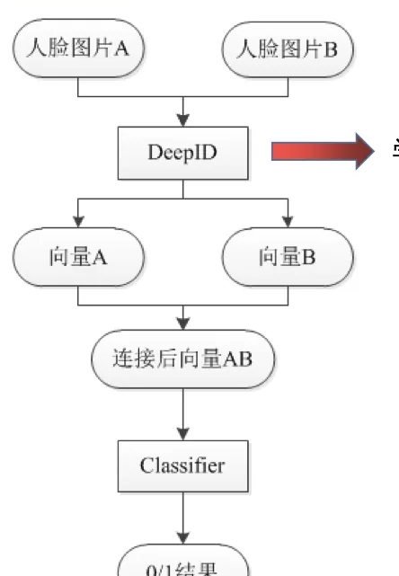
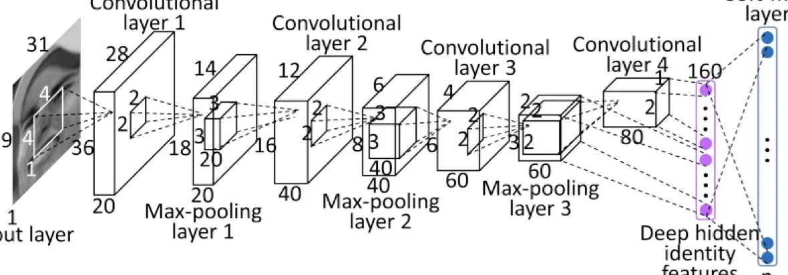
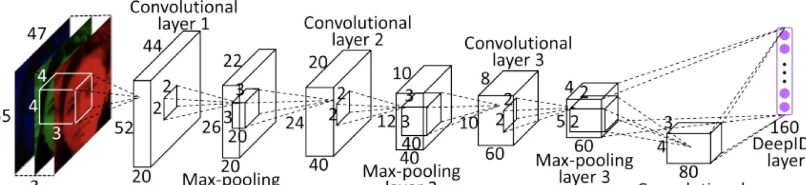
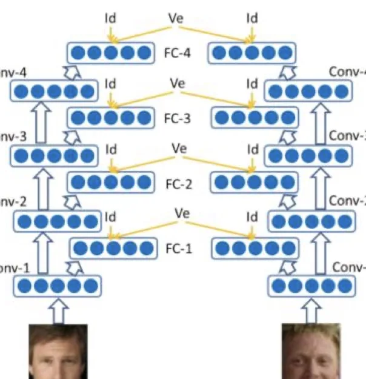
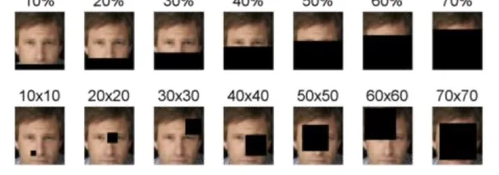
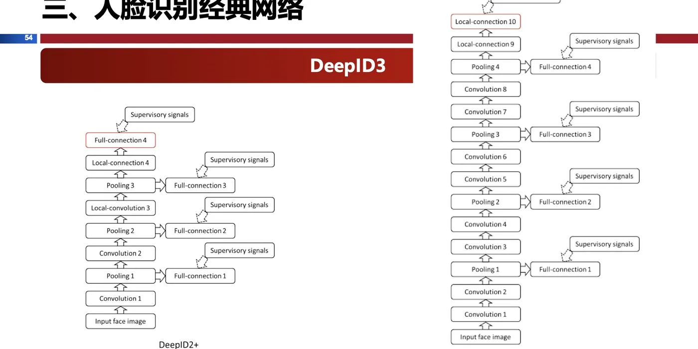
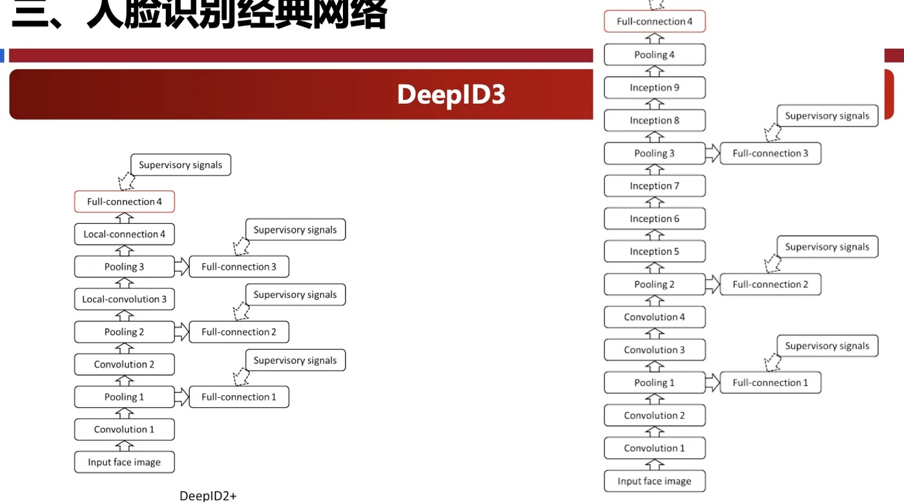

计算机视觉 · 第 8 章 人脸识别
8.7 经典网络：DeepID 系列
从这一节起进入人脸识别算法本身。DeepID 系列是深度学习阶段的第一个代表，它五年里迭代了四代：DeepID1 解决「网络该长什么样」，DeepID2 把注意力转向「目标函数该怎么设计」，DeepID2+ 和 DeepID3 则分别在监督信号的深度和网络的深度上继续加码。一路看下来，LFW 上的验证准确率从 97.45% 被推到 99.53%。
1. 先分清人脸验证与人脸识别
DeepID 所应用的领域是人脸识别的子领域——人脸验证，就是判断两张图片是不是同一个人。课件紧接着给了一句很关键的话：人脸验证问题很容易就可以转成人脸识别问题，人脸识别就是多次人脸验证。

为什么这句话重要？因为它决定了后面所有损失的写法。一张人脸到一个特征向量，两个向量之间的距离小就判为同一个人——只要特征空间里「同类近、异类远」，验证和识别就都解决了。整个 DeepID 系列的改进，本质上都是在让这个特征空间更规整。
2. DeepID1：让网络同时看局部与全局
DeepID1 的结构与普通的卷积神经网络结构类似，但它有一处特别的连接：倒数第二层（DeepID 层）同时与 Convolutional layer 4 和 Max-pooling layer 3 相连。课件解释了这样做的理由：鉴于卷积神经网络层数越高感受野越大，这样的连接方式可以既考虑局部特征，又考虑全局特征。

这处设计值得对照第 6 章（卷积神经网络）来看：浅层（Max-pooling layer 3）保留的是细节和局部纹理，深层（Convolutional layer 4）看到的是更大范围的语义结构。把两层一起送进同一个特征层，等于让最终的人脸特征同时携带两种粒度的信息。这也是「多尺度特征融合」在人脸识别上的早期形态。
3. DeepID2：创新点在损失函数
DeepID2 的网络结构与 DeepID1 相似，创新点在于 loss 的设计，使得提取出的特征属于不同类之间的距离更大、同类之间的距离更小。效果上，相比于 DeepID1，在 LFW 上人脸验证的准确率从 97.45% 提升到了 99.15%。

注意这次进步的性质：网络没怎么变，换了个目标函数，准确率就跳了近两个百分点。这说明在人脸识别这个任务里，「让网络学成什么样的特征空间」和「网络有多深」同样重要，有时更重要。
（1）问题的根源：类内差异大、类间差异小
课件的思考题把动机说得非常清楚：对于人脸识别任务，同一 ID 的人由于人脸角度、光照、表情等会导致图片之间存在较大差异（即类内差异大），而不同的人也可能会出现相似的长相（即类间差异小）。因此，人脸识别面临的主要挑战就是人脸图片较大的类内变化和较小的类间变化。
正因如此，单纯用分类损失训出来的特征不够用——分类损失只关心「分对类」，不关心同一类内部是否聚拢、不同类之间是否拉开。
（2）识别损失：交叉熵
DeepID2 的第一项损失是识别损失（identification loss），用的是交叉熵：
Ident(f, t, θid) = −Σi=1n pi log p̂i = −log p̂t
其中 f 代表 DeepID2 向量，t 为目标的类别，θ 为参数，p̂i 为预测概率，pi 为目标概率，n 表示 ID 的个数。等号右边的化简利用了「目标分布是 one-hot」这一点：只有正确类别 t 的那一项保留下来。课件的结论是：交叉熵损失主要是为了增大不同 id 的人提取出来的特征的距离。
（3）验证损失：把同类的拉近
第二项是验证损失（verification loss），它直接作用在两张图的特征距离上：
Veri(fi, fj, yij) = ½‖fi − fj‖² （yij = 1）
Veri(fi, fj, yij) = max(0, m − ‖fi − fj‖)² （yij = −1）
课件的解释是：yij = 1 代表两张人脸来自同一 id，则二者特征距离要尽量小；yij = −1 来自不同 id，则二者距离要尽量大于阈值 m（m 表示可接受的最小类间距离）。验证损失是为了使同一个 id 的人的特征尽可能的聚拢在一起。

把两项合起来看，DeepID2 干的事就是：交叉熵把不同人推开（类间），验证损失把同一个人拉近（类内）。这也正好对应上一段提出的「类内差异大、类间差异小」两个难点——一个损失管一个。后一项里的 max(0, ·) 是合页形式，意思是「距离只要大于 m 就不再惩罚」，避免把不同人无限制地推远而无谓地消耗模型容量。
4. DeepID2+：把监督信号铺到浅层
DeepID2+ 的网络结构与 DeepID2 相似，改动有三处：
- 输出特征从 DeepID2 的 160 维增大到了 512 维；
- 训练数据集进行了扩充；
- 训练的时候，对 Conv-1、Conv-2 这些浅层也增加了 Ident 与 Verif 监督信号来训练。
第三点是最有想法的一处：DeepID2 只在最后的特征层加识别/验证监督，而 DeepID2+ 把这两种监督信号一路铺到浅层。这相当于要求网络的每一层都学出「有判别力」的表示，而不只是最后一层。这个思路后来在很多网络里以「深层监督」的名字反复出现。结果是：在 LFW 上人脸验证的准确率提升到了 99.47%。
两个有趣的发现
课件记下了 DeepID2+ 训练完成后观察到的两个现象：
- 特征具有稀疏性和选择性：对每个人，最后的 DeepID 层都大概有半数的单元是激活的、半数的单元是抑制的；而不同的人，激活或抑制的单元是不同的。换句话说，每个单元对「是谁」表现出选择性，而身份由一组单元的组合模式编码——这与生物视觉系统里神经元的稀疏响应很相似。
- 自动获得遮挡鲁棒性：在训练数据中没有遮挡数据的情况下，DeepID2+ 自动就对遮挡有了很好的鲁棒性；具体地说，遮挡在 20% 以内、块大小在 30×30 以下时，DeepID2+ 输出向量的验证正确率几乎不变。

第二个发现格外值得琢磨：遮挡在训练集里根本没出现过，模型却自动扛住了。这说明学到的不是「记住某几个位置长什么样」，而是某种分布式的、可冗余表达的表示——部分单元被挡住，其余单元仍能还原出身份。这也是为什么科学家们常说「好的特征本身就带鲁棒性」，而不必针对每一种干扰都单独设计一套方法（对照第 1 节早期方法的第一条局限）。
5. DeepID3：更深的网络，更大的感受野
DeepID3 在 DeepID2+ 的基础上，尝试使用更深的网络和 Inception 层来提升识别率。它分别借鉴 VGG 和 GoogLeNet 提出了两种网络结构（net1 和 net2）。与 DeepID2+ 相比，不同点在于：
- 网络深度加深；
- 出现了连续两个卷积层直接相连的情况，这样使得网络具有更大的感受野；
- DeepID3 Net2 使用了 Inception 结构。
结果：在 LFW 上人脸验证的准确率提升到了 99.53%。


「连续两个卷积层直接相连」这一点需要解释：单个 3×3 卷积的感受野只有 3×3，两个 3×3 卷积叠起来感受野就是 5×5，三个叠起来是 7×7。所以用两层小卷积替代一层大卷积，既能得到同样大的感受野，又减少了参数量、增加了非线性——这正是 VGG 的核心思想。DeepID3 把这一套搬到了人脸识别上。
本节小结
- DeepID 做的是人脸验证（判断两张图是否同一人）；人脸识别可以看成多次人脸验证。核心是把人脸编码成特征向量，让同类近、异类远。
- DeepID1：结构类似普通 CNN，但 DeepID 层同时连接 Convolutional layer 4 与 Max-pooling layer 3，兼顾局部特征（浅层、感受野小）与全局特征（深层、感受野大）。
- DeepID2：结构不变，创新在损失——识别损失（交叉熵）
Ident = −Σ pi log p̂i = −log p̂t把不同 id 推开；验证损失½‖fi−fj‖²（同类）/ max(0, m−‖fi−fj‖)²（异类）把同一 id 拉近，阈值 m 是可接受的最小类间距离。目的正是对付「类内差异大、类间差异小」。LFW 准确率 97.45% → 99.15%。 - DeepID2+：特征从 160 维增到 512 维、扩充训练数据、把 Ident 与 Verif 监督加到 Conv-1/Conv-2 等浅层；LFW 达到 99.47%。两个发现：特征稀疏且具选择性（约半数单元激活，不同人模式不同）；训练数据中没有遮挡也能鲁棒，遮挡 20% 以内、块小于 30×30 时正确率几乎不变。
- DeepID3：借鉴 VGG 与 GoogLeNet 提出 net1、net2，网络加深、连续两层卷积相连以扩大感受野，Net2 用 Inception 结构；LFW 达到 99.53%。